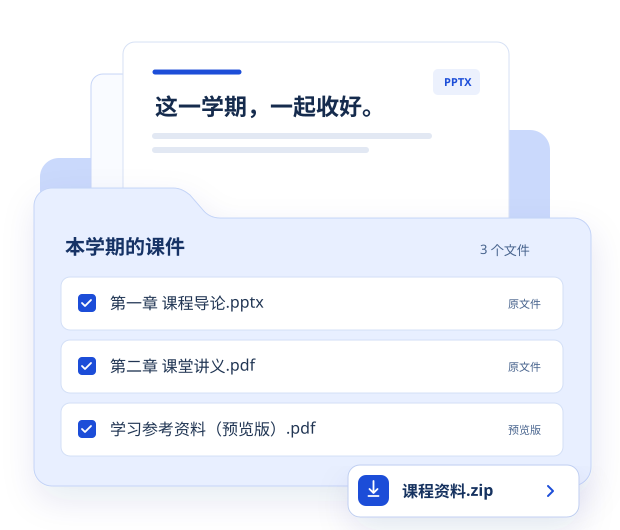

轻量使用
书签版
不安装扩展，拖进书签栏就能用。适合把选中的课件打成一个 ZIP。
把蓝色按钮拖到书签栏，不要在本页运行。
- 显示书签栏Windows：Ctrl + Shift + B
macOS：⌘ + Shift + B - 拖入上方按钮在书签栏空白处松开，保留名称“课程资源助手”。
- 进入课程再点击登录 THEOL 教学平台，打开具体课程，点击这个书签。
手动复制完整书签代码
当前书签 v{{VERSION}}

两种都能整理课件，按你的使用习惯来。
不安装扩展，拖进书签栏就能用。适合把选中的课件打成一个 ZIP。
把蓝色按钮拖到书签栏，不要在本页运行。
当前书签 v{{VERSION}}
把课件加入后台下载队列。关闭面板也能继续，完成后可核对下载记录。
下载 Chrome 扩展v{{VERSION}} · {{PACKAGE_SIZE}} · Chrome 120 及以上
尚未上架 Chrome 商店，按下面三步本地安装。
chrome://extensions每次发布随官网构建 查看版本与 SHA-256
书签版请重新拖入并替换旧书签；扩展版请用新版文件夹替换旧版，再到扩展管理页点击“重新加载”。最后刷新课程页。
非学校官方产品。请遵守学校规定，仅下载你有权访问的课程资料。
先看清有哪些文件，再决定带走哪些。
一次汇总课程目录和学习单元。同课内切换目录或单元，不影响已汇总的列表。
树状目录、关键词搜索、文件类型筛选。不会自动勾选，不必一股脑全部下载。
书签 ZIP 可保留目录或平铺文件；扩展按课程与单元保存，减少下载后再手动分类。
书签适合一次打包，扩展适合持续下载。
| 你关心的事 | 书签版 | Chrome 扩展 |
|---|---|---|
| 默认下载方式 | 选中的文件打包为一个 ZIP | 后台队列，逐个保存文件 |
| 原文件和预览 | 原文件优先，支持可保存的预览 | 同样支持，并记录每项结果 |
| 目录怎么保留 | ZIP 内保留目录，也可选择平铺 | 按课程、资源目录或学习单元保存 |
| 下载时要开着吗 | 保持课程标签页打开，不要刷新 | 可以关闭扩展面板，队列继续 |
| 文件很多、体积较大 | 超出 ZIP 上限后，确认再逐个下载 | 队列控制并发，失败项可单独重试 |
| 怎么确认完成 | “已触发”后，到浏览器下载列表核对 | 读取浏览器报告的完成状态与文件大小 |
书签默认 ZIP 上限为 200 MB / 120 个文件，可在设置中调整。原格式资源流需在本机完整校验；逐个下载时该路径上限为 200 MiB。不要同时发起大量任务。
不需要提供账号、密码或 Cookie。
先确认打开的是 course.buct.edu.cn 上的具体课程，而不是这个安装页。旧书签请重新拖入替换，手动创建的书签网址应以 javascript: 开头。仍然无效时，可改用 Chrome 扩展。
优先保存平台提供的完整文件，保留文件名，不添加额外标记。平台提供 PDF 时保存为 PDF；只有分页图片或正文时，使用实际的 PDF、HTML 或 TXT 格式。
工具只处理平台已经提供且能可靠校验的内容。登录失效、权限限制、无法解析的预览或损坏的响应都会显示具体原因。请先在平台确认资源能否正常打开，恢复登录或稍后重试。
在书签面板打开“设置”，将“ZIP 内目录”改为“不要文件夹，文件平铺”，保存后再下载。文件重名时会自动区分，不覆盖已有条目。
批量逐个下载时，Chrome 可能提示是否允许这个网站下载多个文件。确认是你刚选择的课件后再允许。书签 ZIP 通常只触发一次下载；“已触发”不代表已经保存完成，请到浏览器下载列表核对。
工具面向桌面 Chrome，手机可阅读安装说明，但不保证能运行书签或加载扩展。课件整理、格式校验和预览转换在本机完成，不上传到第三方。具体说明见隐私页。
还没解决？到 GitHub 反馈 附上操作步骤与错误提示即可，请隐藏个人信息。